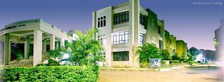
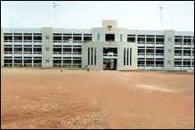

RAJARAMBAPU INSTITUTE OF TECHNOLOGY, SAKHARALE 
ISLAMPUR

Department
- Mechanical
- Information Technology
- Computer Science and Information Technology
- Electric Engineering
- Computer Science
- MBA
- Civil Engineering
The Past and Prasent
Rajarambapu Institute of Technology, Rajaramnagar (formerly known as College of Engineering, Sakharale) was started in 1983. Located near Islampur, 7 kms away from Peth Naka off Pune -Bangalore highway, RIT has a green beautiful campus of 17 hectares and buildings on it measuring 54,000 sq.m. RIT has emerged as a leading technological Institute in Western Maharashtra through its dedicated and disciplined approach to provide quality technical education over a period of more than thirty seven years.
RIT : What Is Special About It?
1) Awards & Achievements at Institute Level
SEED has selected RIT for the award Sustainable Institute Industry Partnership (SII) 2014
Institute received approval from AICTE for the Diploma courses in second shift for Civil Engineering & Mechanical Engineering & increase in intake for M.Tech Design Engineering & M. Tech. Civil – Structural Engineering (18 to 24).
Successfully conducted conference of African Associations at institute from 8th June 2014 to 15th June, 2014.
2)First Graduation Ceremony of M. Tech./MBA post graduates held on 10th November, 2013 at the auspicious hands of Hon. Ratan Tata in year 2013-14.
DQ-CMR Top T-Schools Survey 2013 - Ranked 52nd as India's Top Engineering Colleges 2013-2014
Institute has 23 provisionally registered patents.
3)RIT has bagged Sri V.V.R. Seshadri Rao, Gudiavelleru Engineering College National Award for “The Best Private Engineering College 2013” by ISTE, New Delhi in year 2013-14.
Best Practices Group of CSE dept. has won “Silver Medal” at QCFI, Pune Chapter - 28th Annual Convention on Quality Circle & allied concepts on 24th August, 2013in year 2013-14.
RIT has bagged The ISTE Best Chapter Award 2012-2013.
4)RIT ranked 57th in CSR-GHRDC- ENGINEERING COLLEGE SURVEY 2013 as top Private Engineering Colleges in India & ranked 6th as top Engineering College in State of Maharashtra, 2012-2013.
RIT rated as 'AA+' Institute by careers 360 survey- 2013 in year 2012-2013.
5)DQ-CMR Top T-Schools Survey 2012 - Ranked 56th as India's Top Engineering Colleges 2012-2013
North East SUN magazine's Best Engineering Institutes Ranking - RIT is ranked on 30th in the Top 50 Private Engineering Institutes in India 2012-2013.
RIT rated 30th in the Top 50 Private Engineering Colleges in India by Dainik Bhaskar Lakshya, 2012-2013.
6)Mechanical Engineering department’s Quality Circle team has won “Gold Medal” in CCQC held at Quality Circle Forum of India, Pune Chapter on 25th August, 2012. Topic – In Efficiency of Turmeric Processing Plant in year 2012-2013.
Civil Engineering department’s Quality Circle team has won “Silver Medal” in CCQC held at Quality Circle Forum of India, Pune Chapter on 25th August, 2012. Topic – Kalpataru - Air Pollution Control Device for Small Scale Industries in year 2012-2013.
Departments of Mechanical & Civil Engineering received Excellence award in Quality Circle competition at IIT, Kanpur year 2012-2013.
The Institute is an Autonomous Institute from 2011-12.
7)Institute has received Best Engineering College of Maharashtra Award by Engineering Education Foundation, Pune for the year 2011-2012.
The Institute is an Autonomous Institute from 2011-12.
8)RIT is ranked amongst first ten in the Survey of Industry-linked Engineering Institutes done by AICTE 2010-2011a
Successfully conducted Eye Donation & Eye Checking Camp in associated with Emerging Leaders of Information Technology (ELIT) on 15th September 2012.
Quality Circle named ‘Assured’ from Automobile Engineering Department won international award at QC Convention (ICQCC) at Beijing, China in 2007-2008.